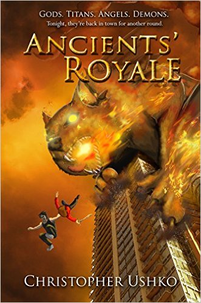
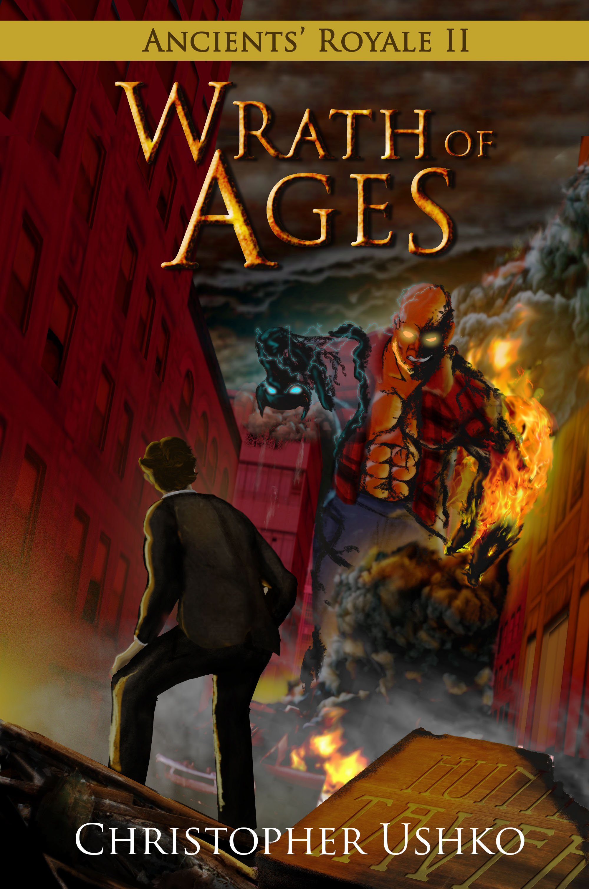
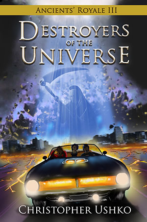

|
About | Games | Cartoons | Misc | Contact |
BooksThis is my epic fantasy book trilogy! I started writing it back in '97 and then kept rewriting them for 20 years. Then a friend convinced me to finish one for an NaNoWriMo event. And then I finished the rest! I'm really happy with how they turned out. They were initially released as Kindle eBooks, but now it's 2020, and the way the world is, I don't want to hide my work behind a cash wall anymore. I wrote these books to be enjoyed by my friends and family (and possibly adapted into a poorly-made low-budget movies). So as of this year, my books are available as free PDFs on my website. You can still purchase them as paperbacks on Kindle if you want them on your shelf. Daddy Rating: The books contain mild swearing and alcohol use, fantasy action, and well-meaning religious humour which may offend some people of faith. |
|  | Ancients' Royale (2013)
The first book is about two brothers running a bar, and one of them hits it off with a girl who discovers they might be vampires. Except they're not vampires (not the brothers anyway) and they turn out to be secret 9000 year-old Fire-Blood Angel/Demons. And then they blow their cover and a demon sorceress tracks them down to Halifax accompanied by the seven demons released from Pandora's Box. So they team up with Poseidon, a Chinese Immortal, and the King of France to defeat the sorceress and her monsters and that's it. Also, there's lot of Doctor Who references. This is basically a young adult novel gone insane. |
|  | Ancients' Royale II: Wrath of Ages (2015)
Ooh! Now this one I spent a bunch of time on. I read lots of Greek/Norse mythology, lots of Lovecraft, and played "Mass Effect 2" way too many times to research this one. This novel takes everybody out of the city and across the world in a magic airship as they hurry to stop the Titans from conquering the world. There twists and turns and character development galore! And a dog that shoots bees out of its mouth! Still my favourite of the three. |
|  | Ancients' Royale III: Destroyers of the Universe (2016)
This is the book that justified this trilogy being books instead of cartoons. Mainly because I keep describing everything in the millions and trillions. The final chapter is basically a road trip across the nine afterlives, with the Four Horsemen running amock and the two brothers coming to terms with the insanity of their own lives. Also: Martian Zombie Dinosaurs, because why not go out with a bang? I had to rush this one because I had a baby on the way, so forgive any spelling errors and join me on this last wild ride. |